PerfectJobQ
December 19, 2014 Tools Used: d3.js
Tools Used: d3.jsMotivation:
As a group of foreign students here in Singapore, we are interested in finding out more information about the general employment trend and condition across different industries through the years.
In addition, interested parties, such as Ministry of Manpower (MOM) could make use of our platform to conduct further economic related research and to public overall Singapore workplace condition to public.
Objective:
Most of the existing workplace visualization are complex and stand-alone visualization, which is difficult to understand and hard to visualize.
The interested parties, such as the potential foreign students, researcher and etc, find it hard to access to such visualised information as most of the time, the information are scattered with no proper representation.
To tackled the problem as stated above, our team decided to create a dash board that centralize all the scattered information and translate all the data into a series of visualizations that allow cross filtering and interaction with users. Our visualization should be able to demonstrate multiple dimensions, including working hour, overtime hour, income and safety level, of a particular industry's workplace environment as well as the historical trend of each industry's development. In the end, our team will be providing the analysis on the pattern of the data collected to gain insight of each industry's development feature.
Current Visualization
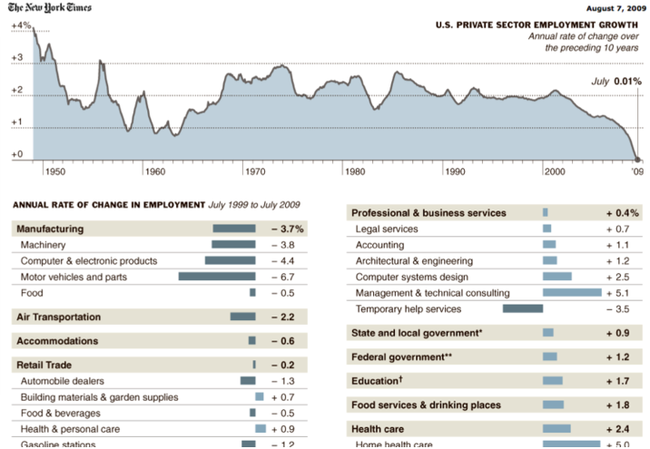
Inspiration: The team like the dashboard design and the choice of graph that compliment each other which we think can be used in our own project to combine few graphs together for a synergized effect.
Pros: Efficient, simple and clean. This dashboard provides a very clean view of the annual rate of change in employment for the whole sectors and for each industry. Reader is able to have an idea of employment rate change at a glance.
I like the idea to use a horizontal bar chart to represent the changes of employment rate. Differentiate the increase and the reduce by shifting the bar chart to left side and right side is a very intuitive way for readers get the trend within 1 second. However, we feel that the colour of positive rate change and negative rate change is not distinguishing enough; maybe it will be better to make the colour more contrast like red and blue.
Cons: This graph is not able to show the historical trend for each sector. Usually when the reader get a rough idea of how the employment rate change in each sector, the reader should want to zoom in a specific sector that he/she is interested in and do more exploration. The dashboard is not able to provide such convenience to readers.
This graph is just a picture rather than an interactive graph. Our group thinks it will be much better if readers can point the mouse to a specific year and the change rate data in the table will be changed accordingly. In such way, the same graph will be able to store and represent a much more larger amount of data, which is more efficient and attractive for readers.
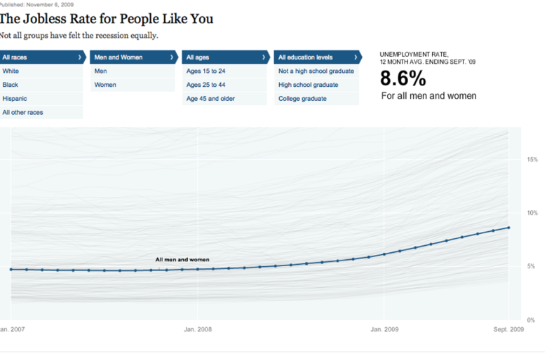
Inspiration:
The team likes the interaction that users can play with the graph by moving the mouse on the graph to see which kind of people have the chosen trend line. This graph is simple and clean but not very useful actually.
Pros:
Having a fixed highlight of men and women's jobless rate will make it easier when reader want to see the relative high or low of unemployed rate for each category. For example, if a reader wants to see which category are hiving a relative high unemployed rate, he only need to move the mouse above the fixed average line and that's it.
This graph provides two ways for reader searching for the information they are looking for. The reader can either click on the lines in the graph, the filter will be changed accordingly, or select the filter, the graph will highlight the corresponding line. This back and forth ways of filtering data is very interesting and interactive.
Cons:
Our team find it difficult to look at the exact unemployment rate for a specific category in a specific year because the distance is too long from the 2007 and 2008 data point to the "percentage" Y-axis. Maybe the team can add in the exact percentage in the label when reader hovers over the nodes.
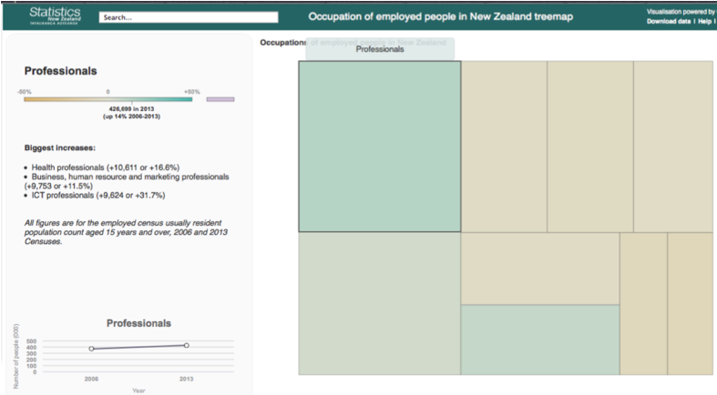
Inspiration:
The team likes the tremor that is able to zoom in and zoom out as the reader clicks. The normal Treemap is not very user-friendly when there are a large amount of categories because the category name will either be overlapped by another category name or is it not displayed in the graph at all. This zoom-in and zoom-out function avoids such problem.
Pros:
The zoom-in and zoom-out function provides a clean and clear view for the reader and avoid ambiguous as mentioned in the "Inspiration".
Cons:
The team feels it is not easy to see the label above each slot because of the colour skin and the position. It might be better to put the hover over label at the center of the cube.
However, we find this graph not very useful for our team because our dataset doesn't have many layers.
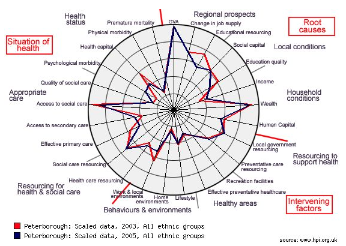
Inspiration:
The team like this interaction that it could present the data in multiple dimensions at the one time and by applying multiple layers in one graph differentiated by color allows the user to compare data from different categories at the same time. It is very clear and simple.
Pros: Having multiple layers representing multiple categories in one single graph makes it very clear and easy to compare different categories. Having different degree for each dimension also simplified the comparison and this provide the user a rough idea of how does the category looks like and which are the strength and weakened of each category.
Cons:
This graph cannot handle too many categories appearing in one graph. Too color and too many polygons will make the graph very messy and hard to read. Our suggestion is to have a filter that allow users choose which category to appear on the graph so there's won't be too much layers appear in one single graph.
Data:
The data are collected mainly from Ministry of Manpower and CEIC.
*This set of data consists of 43 industries information on number of employment data starting from end of 2004 to 2011.
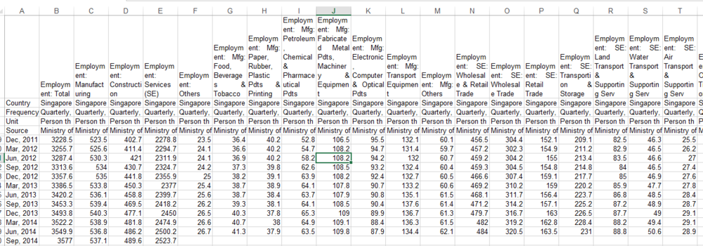
*This set of data consists of 43 industries information on number of employment data starting from 2011 to 2014. These data will be combined with the first set of data based on industry.
*This set of data consists of average quarterly nominal earnings across industries from 2005 to 2010.
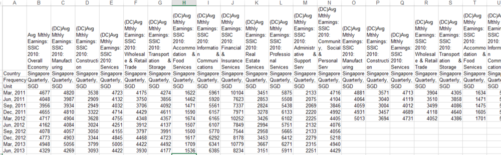
*This set of data consists of average quarterly nominal earnings across industries from 2011 onwards. These data will be combined with the first set of data based on industry.
*This set of data consists of 43 industries information on weekly working hours starting from 1990.
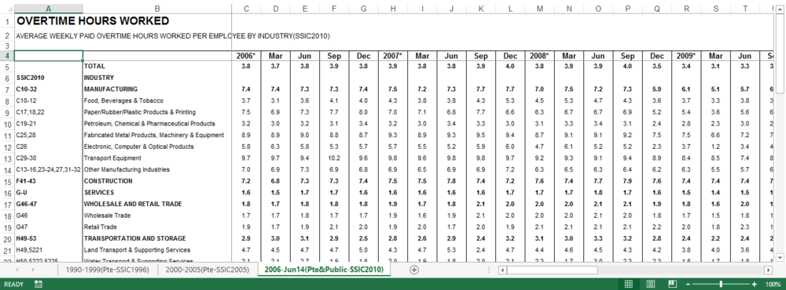
*This set of data consists of 43 industries information on weekly overtime working hours starting from 1990.
Visualisation Plan
-- Storyboard:
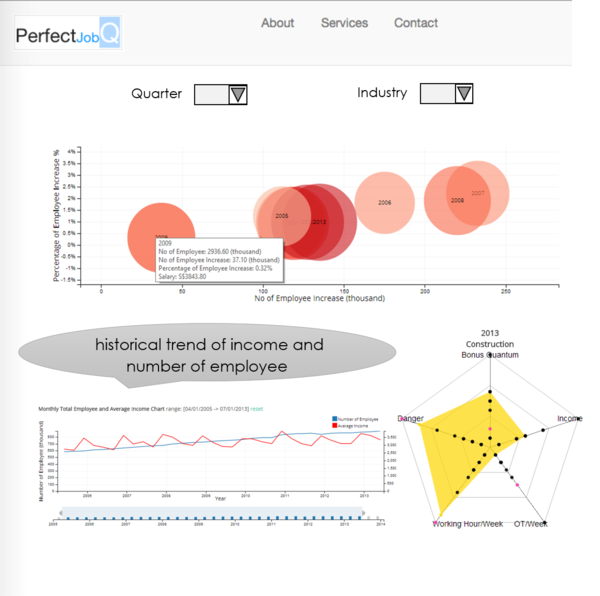
-- Breakdown:
1. Bubble Chart
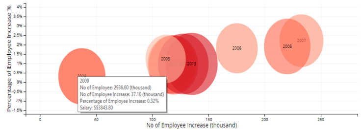
This bubble chart visualization allows users to analyze and compare multiple attributes, including number of employees, salary and number of employee increase, at one glance. Users could easily observe an increasing trend in salary over the years by looking at the color of each bubble. The darker the color is, the higher the income is. Besides that, size of the bubbles represents total number of employees in all industries in each year. Information on number of employee increase and percentage of employee increase is available by observing x and y-axis.
If users were to select a specific quarter or specific industry, changes will be automatically reflected on this bubble chart. In addition, users could choose to select one or more bubbles to visualize employment and workplace condition during the selected period of time from other diagrams, which will be further discussed.
However, this bubble chart does have certain disadvantages, such as unable to trace historical development and trend in time order. We wish to address this issue by making use of line graph, which is described in the later section.
2. Radar Chart
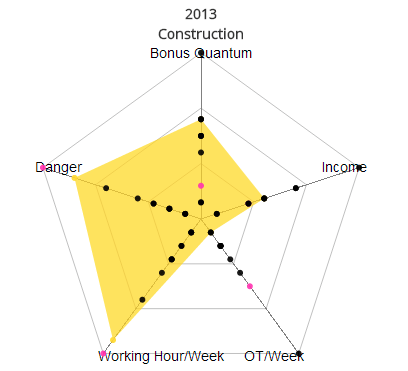
This radar chart provides a graphical visualization of displaying multiple attributes in the form of a multidimensional chart represented on axes starting from the same point. In order to provide a more holistic view of Singapore workplace condition, bonus, income, overtime hours, working hours and workplace dangerous level are the five different attributes that will be measured and compared.
When a specific year and industry is selected, correlations among different attributes are clearly represented by the highlighted region. When changing the selected industry or year, trend could be easily and clearly observed. Year selection is the linkage of this radar chart with the bubble chart mentioned previously.
3. Line Chart
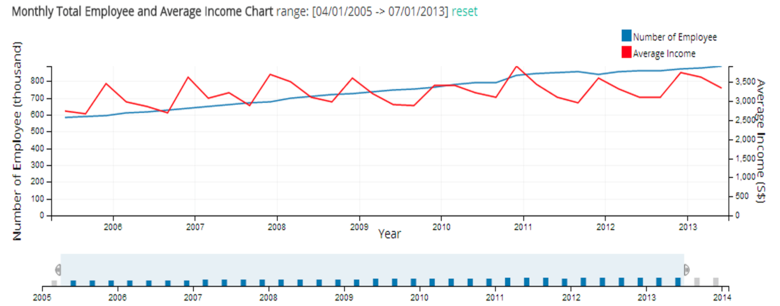
As previously mentioned, one disadvantage of the bubble chart is its inability of displaying data in time order. As such, this line graph will be adopted to represent time series data on income level and total number of employees.
The key benefit of using line graph is in its inherent nature to illustrate trends by virtue of gradients. A line inclining upwards means an increase, and vice versa. In essence, there is no better tool to depict patterns and trends over time other than a line graph. This line graph will be linked with bubble chart for year selection. Quarter and industry selection could also be reflected on this chart. Therefore, users could choose to observe patterns for their interested time period and industry.
One highlight of this line graph is the flexibility to zoom in by selecting the interested period of time on the bar chart below. The height of the bar chart represents total number of employees. By choosing a certain period of time, changes not only on the line graph, but also on the bubble chart will be reflected. As such, taking a closer look at the graph will discover some hidden trends and patterns.